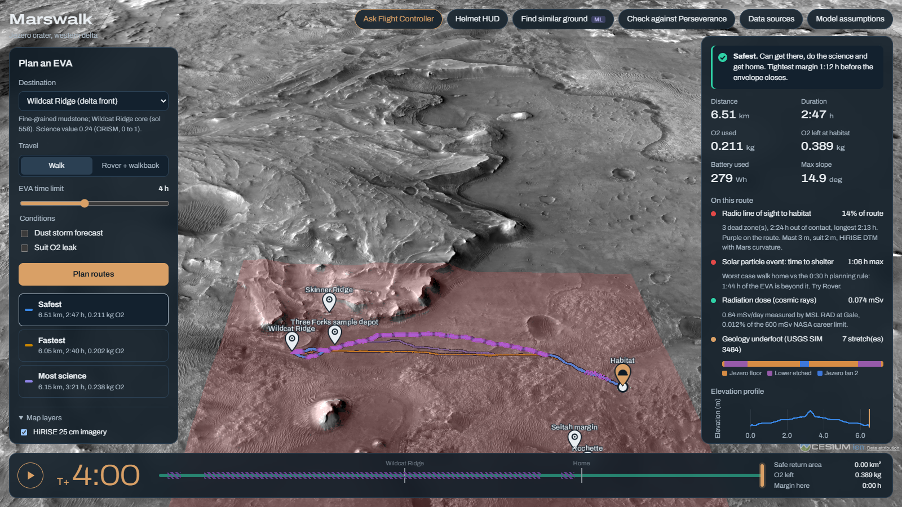
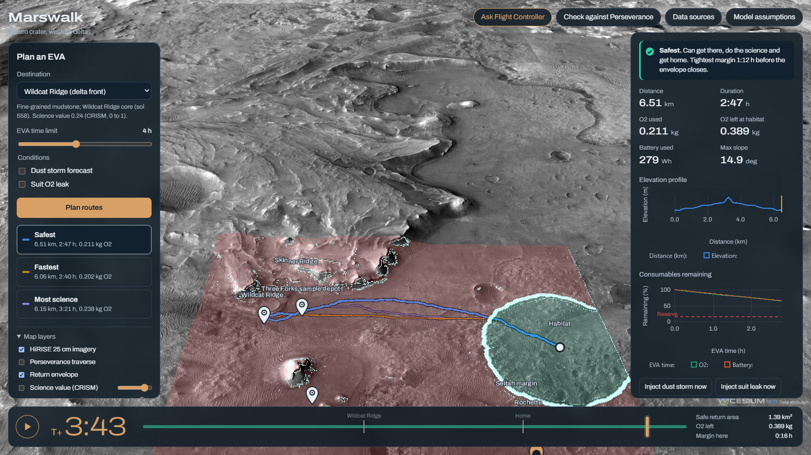
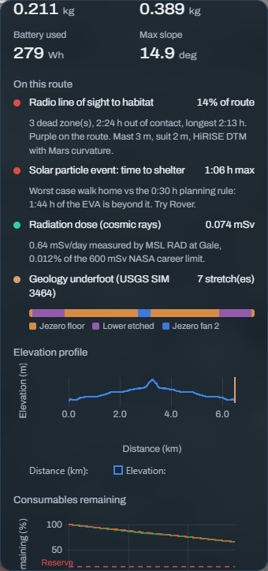
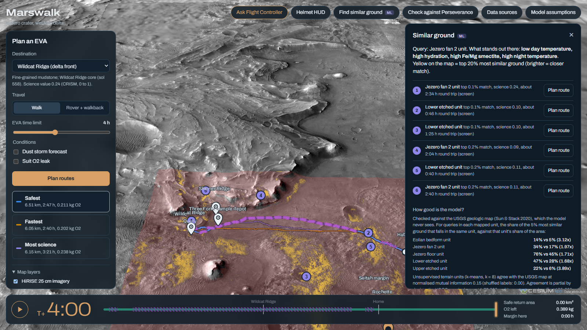
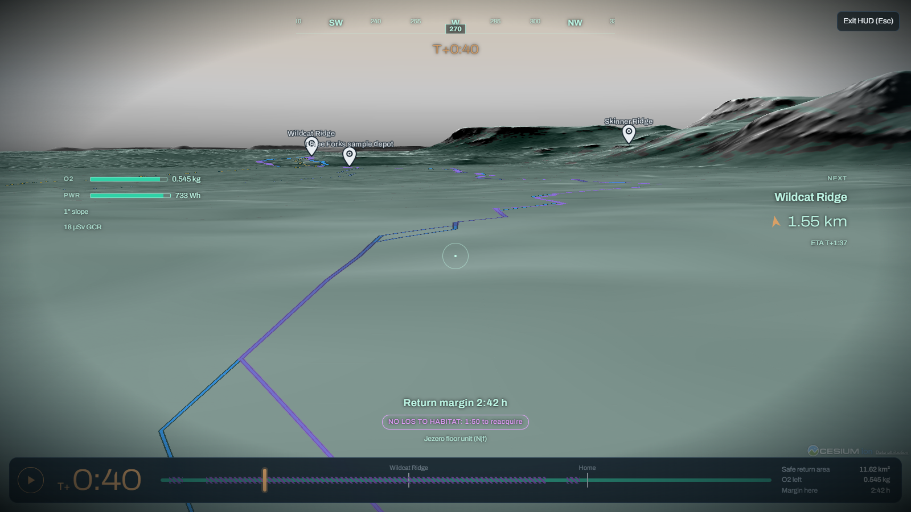
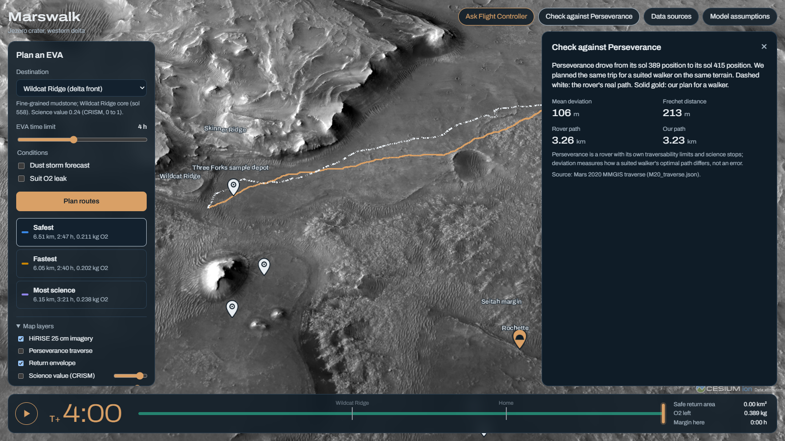
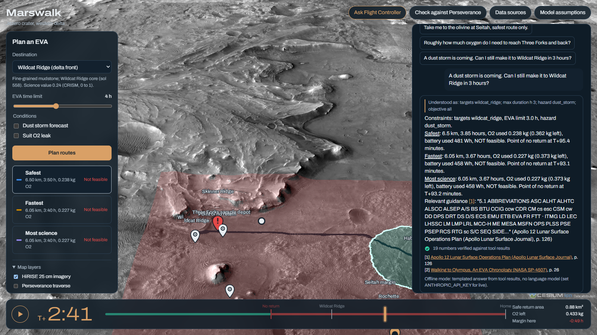

A layered 3D map of Jezero crater that computes on eight NASA and USGS datasets to plan a suited Marswalk: routes costed in oxygen and battery, a shrinking return envelope, live hazards, a helmet HUD and ML-guided science.

Every 2 m step is costed with a published walking-energy model on the real slope. Safest, fastest and most-science routes.
Every cell gets a "last safe moment". The safe area shrinks on the map as the EVA clock runs; the point of no return is pinned on the route.




mean deviation from Perseverance's real drive between the same two points
safety numbers from the AI assistant: a verifier checks every figure against the planner's output
automated tests, plus 6 route cases and evals; every assumption has a cited source
to plan three routes on 3 million terrain cells


Impact: mission planners and crews get a decision, not just a picture: go, go by rover, or don't go, with the reason. The same pipeline runs on any site with a HiRISE DTM.
Built with Python (GDAL, numba, scikit-learn, FastAPI), TypeScript + CesiumJS, and Claude with tool use.